Designing for iOS
iOS embodies the following themes:
Deference. The UI helps people understand and interact with the content, but never competes with it.
Clarity. Text is legible at every size, icons are precise and lucid, adornments are subtle and appropriate, and a sharpened focus on functionality motivates the design.
Depth. Visual layers and realistic motion impart vitality and heighten people’s delight and understanding.
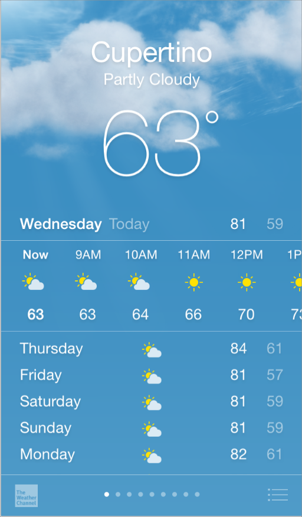
Whether you’re redesigning an older app or creating a new one, consider approaching the job in this way:
First, look past the UI to the app’s core functionality and affirm its relevance.
Next, use the themes of iOS to inform the design of the UI and the user experience. Add details and embellishments with care and never gratuitously.
Finally, be sure to design your UI to adapt to various devices and modes so that users can enjoy your app in as many contexts as possible.
Throughout the process, be prepared to defy precedent, question assumptions, and let a focus on content and functionality motivate every design decision.
Defer to Content
Although a crisp, beautiful UI and fluid motion are highlights of the iOS experience, the user’s content is at its heart.
Here are some ways to make sure that your designs elevate functionality and defer to the user’s content.
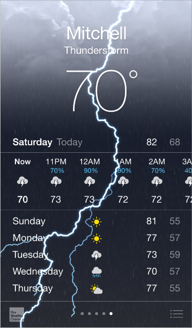
Take advantage of the whole screen. Weather is a great example of this approach: The beautiful, full-screen depiction of a location’s current weather instantly conveys the most important information, with room to spare for hourly data.
Reconsider visual indicators of physicality and realism. Bezels, gradients, and drop shadows sometimes lead to heavier UI elements that can overpower or compete with the content. Instead, focus on the content and let the UI play a supporting role.
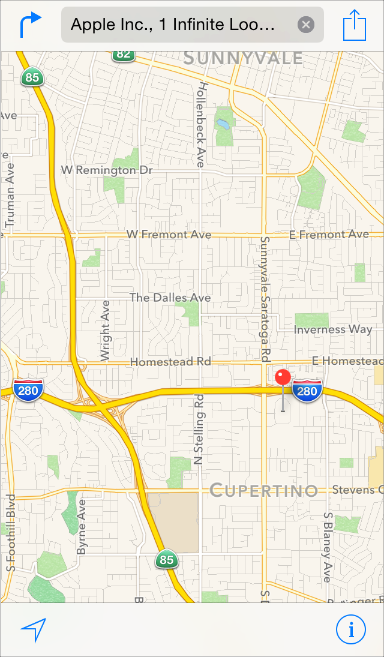
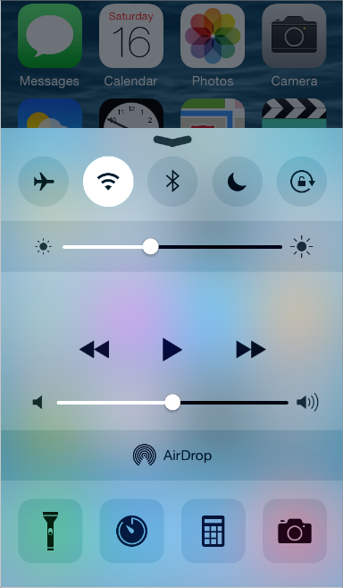
Let translucent UI elements hint at the content behind them. Translucent elements—such as Control Center—provide context, help users see that more content is available, and can signal transience. In iOS, a translucent element blurs only the content directly behind it—giving the impression of looking through rice paper—it doesn’t blur the rest of the screen.
Provide Clarity
Providing clarity is another way to ensure that content is paramount in your app. Here are some ways to make the most important content and functionality clear and easy to interact with.
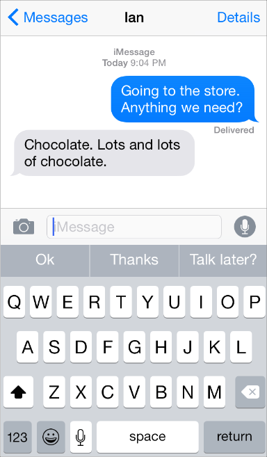
Use plenty of negative space. Negative space makes important content and functionality more noticeable and easier to understand. Negative space can also impart a sense of calm and tranquility, and it can make an app look more focused and efficient.
Let color simplify the UI. A key color—such as yellow in Notes—highlights important state information and subtly indicates interactivity. It also gives an app a consistent visual theme. The built-in apps use a family of pure, clean system colors that look good at every tint and on both dark and light backgrounds.
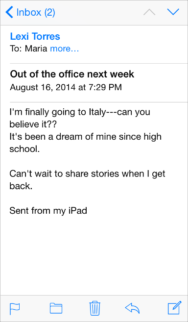
Ensure legibility by using the system font. San Francisco (the iOS system font) works with Dynamic Type to automatically adjust letter spacing and line height so that text is easy to read and looks great at every size. Whether you use San Francisco or a custom font, be sure to adopt Dynamic Type so your app can respond when the user chooses a different text size.
Embrace borderless buttons. By default, all bar buttons are borderless. In content areas, a borderless button uses context, color, and a call-to-action title to indicate interactivity. And when it makes sense, a content-area button can display a thin border or tinted background that makes it distinctive.
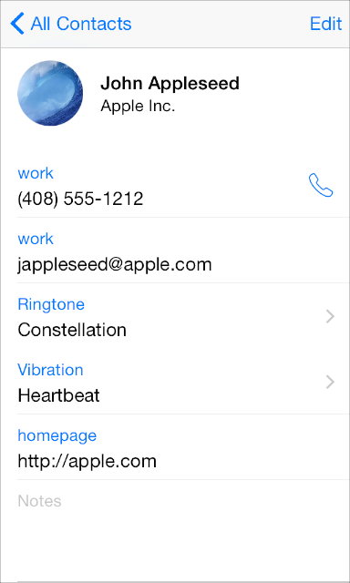
Use Depth to Communicate
iOS often displays content in distinct layers that convey hierarchy and position, and that help users understand the relationships among onscreen objects.
On a device that supports 3D Touch, peek, pop, and quick actions give users access to important functionality without losing their context.
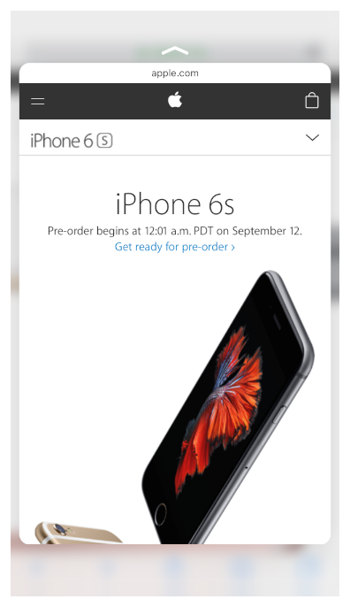
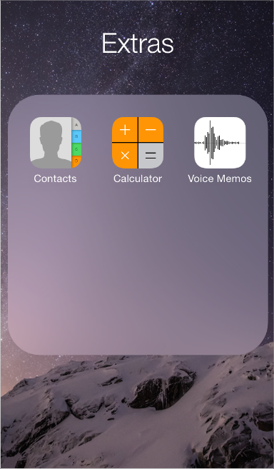
By using a translucent background and appearing to float above the Home screen, folders separate their content from the rest of the screen.
Reminders displays lists in layers, as shown here. When users work with one list, the other lists are collected together at the bottom of the screen.
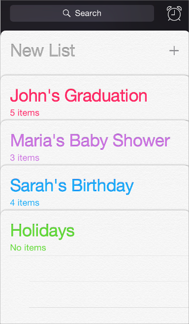
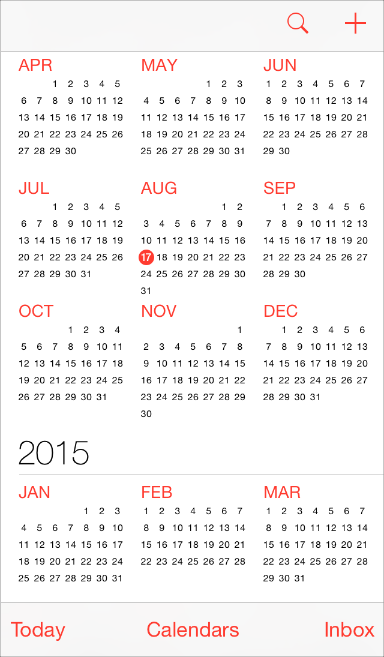
Calendar uses enhanced transitions to give users a sense of hierarchy and depth as they move between viewing years, months, and days. In the scrolling year view shown here, users can instantly see today’s date and perform other calendar tasks.
When users select a month, the year view zooms in and reveals the month view. Today’s date remains highlighted and the year appears in the back button, so users know exactly where they are, where they came from, and how to get back.
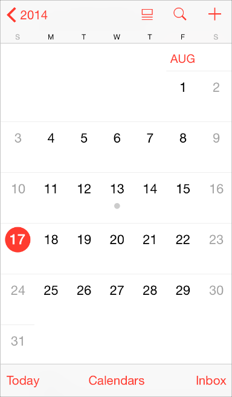
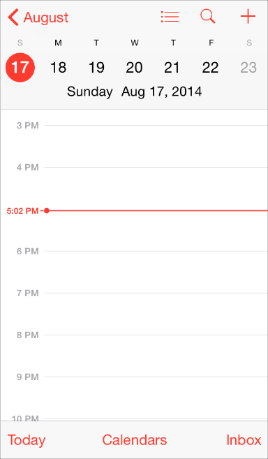
A similar transition happens when users select a day: The month view appears to split apart, pushing the current week to the top of the screen and revealing the hourly view of the selected day. With each transition, Calendar reinforces the hierarchical relationship between years, months, and days.
Copyright © 2016 Apple Inc. All rights reserved. Terms of Use | Privacy Policy | Updated: 2016-03-21